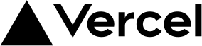
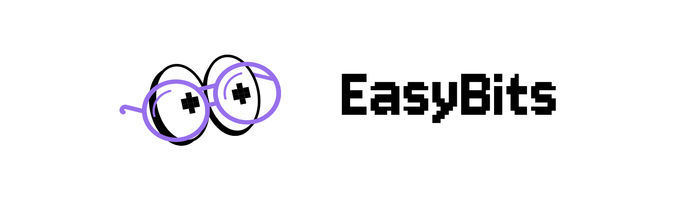

Tu correo ya llega.
Tu página, cerrada.
Tu página, cerrada.
A dónde lleva
cada parte de tu dominio.
cada parte de tu dominio.
Sitio webtunegocio.com
@ raíz →sin sitioVercel ✓
www →sin sitioVercel ✓
blog →sin sitio


Vista previa · nada se escribe aún
+ A @ 76.76.21.21
+ CNAME www cname.vercel-dns.com
= MX @ tu correo se queda
Aplicar
Correo y página,
en la misma dirección.
en la misma dirección.
Sube la cortina en mailmask.studio
www